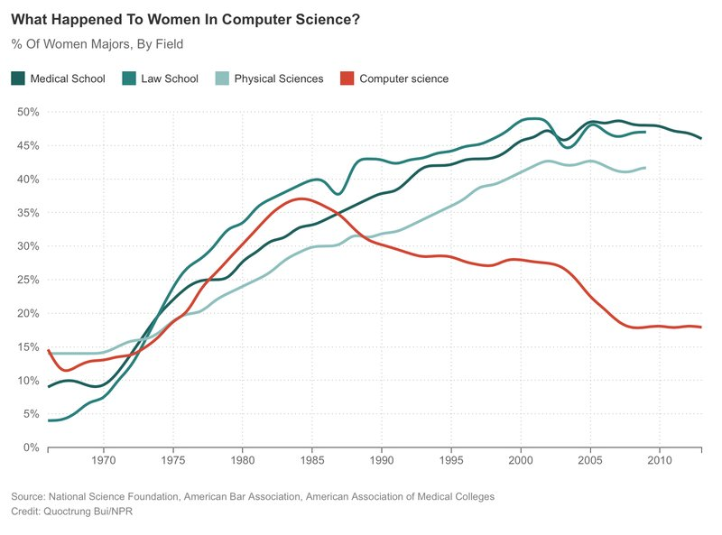

What I Didn't Learn in a CS Degree
I recently stumbled across The Imposter’s Handbook, which describes itself this way:
For the longest time I would remain silent when discussions with my peers would veer toward theoretical topics like P vs. NP, Lambda Calculus or bubble sort vs. merge sort… I decided to change all of this a year ago. I sat down and looked up all of the topics that a typical CS degree covers and then I dove in. Half way through, I decided to write a book about what I was learning.
It’s an interesting project, but it got me thinking about all the things I didn’t learn when I did do a CS degree:
- At 25, I would have said that I got where I was through hard work. At 53, I realize that most of where I am is due to being born white and male without serious mental or physical challenges in a stable middle-class family living in a peaceful democracy.
- The computing industry is actively unwelcoming to people who aren't straight white/Asian males, routinely builds systems that facilitate their harassment and abuse, and then pretends that the problem is somehow insoluble. Equally, the financial-industrial complex called Silicon Valley doesn't actually want to disrupt anything that matters because it's quite happy with wealth and power being distributed as they are (i.e., unequally, but in their favor).
- To aid that, Silicon Valley perpetuates a mythos of rags-to-riches startups that enables it to extract as much unpaid or low-paid labor from people as it can, regardless of the personal cost.
- Like most technologists, the founders of most "learn to code" groups unconsciously assume that knowledge should flow one way and gratitude another: we will teach them Javascript and data analysis, and they will just listen. The fact is, they have vitally important things to teach us about running meetings, being inclusive, staying focused on things that actually matter, staying healthy, and all the other tremendously hard skills techies condescendingly called "soft".
- And a long list of other insights that still often make me uncomfortable.
It’s easy to say “this stuff isn’t part of computer science”, but that’s disingenuous. The boundaries of computer science can be exactly where we choose to draw them, just like the boundaries of medicine or economics. Right now, those boundaries are drawn by the privileged in ways that implicitly enshrine their privilege, but they could include this:

or the fact that “Massive Open Online Course” has effectively come to mean ubiquitous surveillance in the classroom, or anything else if we so choose.
The first step toward choosing is to be aware that there are choices. That’s why I’m looking forward to The Imposter’s Handbook, but would look forward more to a book that collected and presented all the “other stuff” I didn’t learn in school. I’m not qualified to write it, but nothing would make me prouder than to see it as the next volume in the AOSA series. I’d be grateful for your thoughts.